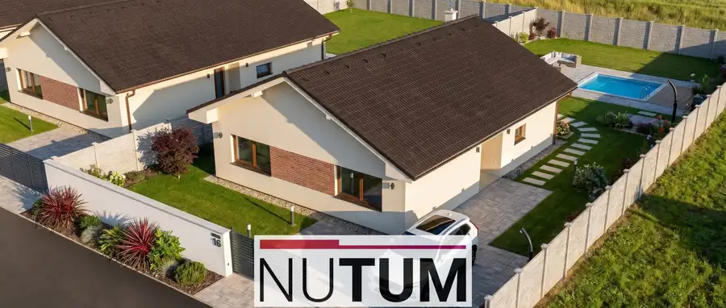
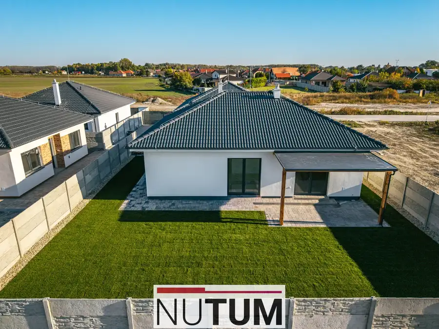

Predaj · Dom
Nutum | Rodinný dom so štandardom, predným plotom a trávnikom v cene
Dolný Bar
185 000 €2 256 € za m²
- Plocha82 m²
- StavNovostavba
- Energetická triedaA
O nehnuteľnosti
Ponúkame Vám na predaj náš vzorový dom nachádzaajúci sa v novovybudovanej lokalite obce Dolný Bar, okres Dunajská Streda. Lokalita sa nachádza na výjazde z obce smerom na obec MAD po pravej strane! CENA S PREVEDENÍM ŠTANDARD je 185 000 €, RODINNÝ DOM TYP ADOM DISPOZÍCIA:- vstupná chodba- dve izby- obývačka + kuchyňa- spáľňa - kúpeľňa s wc POZEMOK:- výmera celého pozemku 279 m2 V prípade otázok ma neváhajte kontaktovať! S pozdravom Ing. Martin Tomko0908 189 393martin.tomko@nutum.sk
Parametre
| Druh | Rodinný dom |
|---|---|
| Dátum zverejnenia | 27. 4. 2026 |
| Energetický certifikát budovy | A |
| Plocha pozemku | 279 m² |
| Počet izieb / miestností | 4 |
| Počet kúpeľní | 1 |
| Počet nadzemných podlaží | 1 |
| Počet spální | 1 |
| Rok výstavby | 2025 |
| Stav nehnuteľnosti | Novostavba |
| Telekomunikácie | Internet |
| Terén pozemku | Rovinatý |
| Typ | Predaj |
| Typ konštrukcie | Tehlová |
| Vykurovanie | Podlahové |
| Zastavaná plocha | 103 m² |
| Úžitková plocha | 82 m² |
Kde to je


Ďalšie ponuky
Celá ponukaMohlo by Vás zaujímať

DomNové10 349 900 €Skolaudované samostatné bungalovy so štandardom | nový Miloslavov Miloslavov 107 m² Ponúkame Vám na predaj moderné 4-izbové Rodinné Domy v krásnej zabývanej časti Miloslavova - časť Alžbetin Dvor na Sekvojovej a Bottovej…
DomNové10 Cena dohodouNUTUM | Krásny 4 izbový rodinný dom s väčším pozemkom Dolný Bar 90 m² Ponúkame posledné rodinné domy v Dolnom Bare v novovybudovanej lokalite v Dolnom Bare, ktoré sú ihneď k dispozícii na dokončenie do Štandardu. Cena…